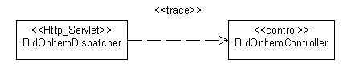

|
Классы, описанные в разделе Рабочий продукт: класс анализа, представляют роли, которые играют
экземпляры элементов проектирования; эти роли могут выполняться одним или несколькими элементами модели проектирования.
Кроме того, один элемент проектирования может выполнять несколько ролей. Ниже обсуждаются способы выполнения ролей
анализа:
-
Класс анализа может стать единственным классом проектирования в модели проектирования.
-
Класс анализа может стать частью класса проектирования в модели проектирования.
-
Класс анализа может стать агрегатным классом проектирования в модели проектирования. (Это означает, что части этого
агрегата не могут явно моделироваться как классы анализа.)
-
Класс анализа может стать группой классов проектирования, наследующей из одного и того же класса в модели
проектирования.
-
Класс анализа может стать группой функционально связанных классов проектирования в модели проектирования.
-
Класс анализа может стать подсистемой проектирования в модели проектирования.
-
Класс анализа может стать частью подсистемы проектирования, например одного или нескольких интерфейсов и их
реализации.
-
Класс анализа может стать взаимосвязью в модели проектирования.
-
Взаимосвязь между классами анализа может стать классом проектирования в модели проектирования.
-
Классы анализа отвечают преимущественно за функциональные требования и моделируют объекты из домена "проблем";
классы проектирования отвечают за нефункциональные требования и моделируют объекты из домена "решений".
-
Классы анализа можно применять для представления "объектов, которые мы хотим поддерживать в системе", не уточняя,
какая часть из них будет поддерживаться аппаратным, а какая - программным обеспечением. Таким образом, часть класса
анализа может реализовываться аппаратным обеспечением, а не моделироваться с помощью модели проектирования.
Любое сочетание вышеизложенного также возможно.
Если поддерживается отдельная Модель анализа, то вы должны поддерживать трассируемость от указанного элемента
проектирования до соответствующих классов анализа. Дополнительная информация приведена в разделе Отображение в модель анализа.
Этот раздел применим только в случае, если поддерживается отдельная Модель анализа.
Во время проектирования определяются элементы проектирования, поддерживающие более тесную связь с архитектурой и
выбранными технологиями. Каждый класс анализа в модели анализа должен быть связан по крайней мере с одним классом
проектирования в Модели проектирования.
Для моделирования этой трассируемости необходимо провести зависимость <<трассировка>> от элемента
проектирования к представляемому им классу или классам анализа, как показано на следующей диаграмме:

Примечание: ссылки трассируемости проводятся от элементов Модели проектирования к элементам Модели
анализа, так чтобы Модель проектирования зависела от Модели анализа, а не наоборот.
Перед началом проектирования вы должны решить, как классы в модели проектирования будут связаны с классами реализации;
это должно быть описано в рекомендациях по проектированию, относящихся к проекту.
Модель проектирования может быть более или менее близка к модели реализации, в зависимости от того, как ее классы,
пакеты и подсистемы отображаются в классы реализации, файлы, пакеты и подсистемы в модели реализации. Во время
реализации вы будете часто заниматься мелкими тактическими вопросами, относящимися к среде реализации; они не должны
влиять на модель проектирования. Например, во время реализации могут быть добавлены классы и подсистемы для выполнения
параллельной разработки или для корректировки импортных зависимостей. Дополнительная информация приведена в разделах Задача: создать структуру модели реализации и Технология: отображение из проекта в код.
Должно существовать непротиворечивое отображение из модели проектирования в модель реализации. Это отображение должно
быть определено в разделе Рабочий продукт: рекомендации по проекту, а непротиворечивый уровень
абстракции должен применяться во всей модели проектирования.
Удачная модель
проектирования обладает следующими характеристиками:
-
Она удовлетворяет требованиям системы.
-
Она устойчива к изменениям в среде реализации.
-
Она проста в обслуживании по сравнению с другими возможными моделями объектов и с реализацией системы.
-
Она понятна с точки зрения ее реализации.
-
Она не содержит информацию, хорошо документированную в программном коде.
-
Она легко адаптируется к изменениям в требованиях.
Конкретные характеристики приведены в разделе Справочная
таблица: модель проектирования.
|